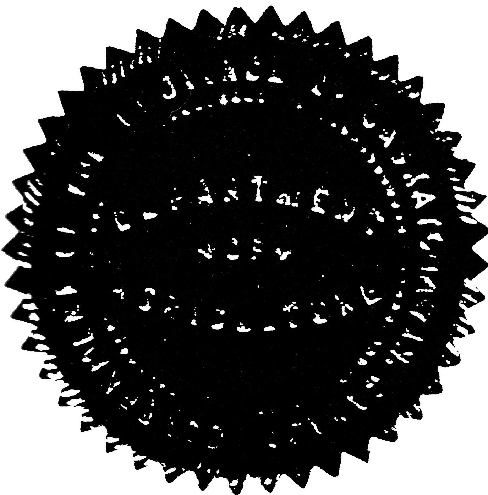

Family Farm Heritage Award
presented to
GILBERT & GEORGE L'HEUREUX
to honour the heritage of your family farm of which SECTION 23-48-17-W3M has been continuously operated by members of the family since 1887
Presented in celebration of
Saskatchewan's 75th Anniversary Year 1980

Hon. Gordon MacMurchy
Minister of Agriculture
Hon. Ed Tchorzewski
Minister-in-charge of
Celebrate Saskatchewan